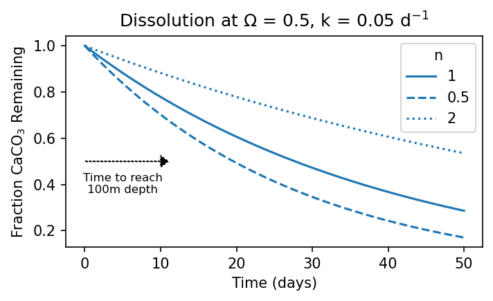

K0
Contents
import numpy as np
import cbsyst as cb
import pandas as pd
import matplotlib.pyplot as plt
from matplotlib.gridspec import GridSpec
---------------------------------------------------------------------------
ModuleNotFoundError Traceback (most recent call last)
Cell In[1], line 1
----> 1 import numpy as np
2 import cbsyst as cb
3 import pandas as pd
ModuleNotFoundError: No module named 'numpy'
K0#
T = np.arange(-2, 30, 0.1)
Ks_35 = cb.calc_Ks(T=T, S=35)
Ks_30 = cb.calc_Ks(T=T, S=30)
fig, ax = plt.subplots(constrained_layout=True)
ax.plot(T, Ks_30.K0, label='S=30')
ax.plot(T, Ks_35.K0, label='S=35')
ax.legend()
ax.text(-1, 0.03, "$[CO_{2(aq)}] = K_0~pCO_2$")
ax.set_xlabel('Temperature (°C)')
ax.set_ylabel("Henry's Constant for $CO_2~(K_0)$")
fig.savefig('figures/carbon-K0.png')
Bjerrum Plot#
pH = np.linspace(4, 11)
sw = cb.Csys(pHtot=pH, DIC=2000)
fig, ax = plt.subplots(constrained_layout=True)
ax.plot(sw.pHtot, sw.CO2, label='$CO_2^*$', lw=2)
ax.plot(sw.pHtot, sw.HCO3, label='$HCO_3^-$', lw=2)
ax.plot(sw.pHtot, sw.CO3, label='$CO_3^{2-}$', lw=2)
ax.set_xlim(pH.min(), pH.max())
ax.axvspan(7.9, 8.2, color='C0', alpha=0.3, lw=0)
ax.legend()
ax.set_xlabel('pH')
ax.set_ylabel('Concentration (μmol/kg)')
ax.axvline(-np.log10(sw.Ks.K1), ls='--', color=(0,0,0,0.3), lw=1)
ax.text(-np.log10(sw.Ks.K1), 1850, '$pK_1$', ha='center', va='bottom', color=(0,0,0,0.3), backgroundcolor='w', fontsize=10)
ax.axvline(-np.log10(sw.Ks.K2), ls='--', color=(0,0,0,0.3), lw=1)
ax.text(-np.log10(sw.Ks.K2), 1850, '$pK_2$', ha='center', va='bottom', color=(0,0,0,0.3), backgroundcolor='w', fontsize=10)
fig.savefig('figures/carbon-bjerrum.png')
K0K1K2#
T = np.arange(-2, 30, 0.1)
Ks_35 = cb.calc_Ks(T=T, S=35)
Ks_30 = cb.calc_Ks(T=T, S=30)
pH = np.linspace(4, 11)
sw_30 = cb.Csys(pHtot=pH, DIC=2000, T_in=30.)
sw_0 = cb.Csys(pHtot=pH, DIC=2000, T_in=0.)
fig, ax = plt.subplots(constrained_layout=True)
for sw, ls, lw, alpha in zip([sw_30, sw_0], ['-', '--'], [1,1], [.6, 1]):
ax.plot(sw.pHtot, sw.CO2, color='C0', ls=ls, lw=lw, alpha=alpha)
ax.plot(sw.pHtot, sw.HCO3, color='C1', ls=ls, lw=lw, alpha=alpha)
ax.plot(sw.pHtot, sw.CO3, color='C2', ls=ls, lw=lw, alpha=alpha)
ax.axvline(-np.log10(sw.Ks.K1), ls=ls, color=(0,0,0,0.2), lw=lw)
ax.axvline(-np.log10(sw.Ks.K2), ls=ls, color=(0,0,0,0.2), lw=lw)
ax.text(-np.log10(sw.Ks.K1), 1850, '$pK_1$', ha='center', va='bottom', color=(0,0,0,0.3), backgroundcolor='w', fontsize=10)
ax.text(-np.log10(sw.Ks.K2), 1850, '$pK_2$', ha='center', va='bottom', color=(0,0,0,0.3), backgroundcolor='w', fontsize=10)
ax.plot([],[],label='$CO_2^*$',color='C0')
ax.plot([],[],label='$HCO_3^-$',color='C1')
ax.plot([],[],label='$CO_3^{2-}$',color='C2')
ax.plot([],[],label='T=30°C',color=(0,0,0,0.3), lw=1, ls='-')
ax.plot([],[],label='T=0°C',color=(0,0,0,0.3), lw=1, ls='--')
ax.set_xlim(pH.min(), pH.max())
ax.set_xlabel('pH')
ax.set_ylabel('Concentration (μmol/kg)')
ax.legend(fontsize=8)
fig.savefig('figures/carbon-bjerrum-temp.png')
pCO2 vs pH#
# fig, ax = plt.subplots(constrained_layout=True)
# for T, ls in zip([0, 30], ['--', '-']):
# swC = cb.Csys(pCO2=np.linspace(250, 450), TA=2300, T_in=T)
# ax.plot(swC.pCO2, swC.pHtot, color='k', ls=ls)
# ax.plot([],[],label='T=30°C',color=(0,0,0,0.3), lw=1, ls='-')
# ax.plot([],[],label='T=0°C',color=(0,0,0,0.3), lw=1, ls='--')
# ax.axvspan(418,422, lw=0, alpha=0.3, color='C1')
# ax.text(415, 7.99, 'Modern', ha='right', va='bottom', fontsize=10, color='C1')
# ax.axvspan(268,272, lw=0, alpha=0.3, color='C0')
# ax.text(275, 8.2, 'Pre-Industrial', ha='left', va='bottom', fontsize=10, color='C0')
# ax.set_xlim(250, 450)
# ax.legend(fontsize=8)
# ax.set_ylabel('pH')
# ax.set_xlabel('$pCO_2$ (ppm)')
# fig.savefig('figures/carbon-pCO2-pH.png')
pCO2 vs DIC#
fig, ax = plt.subplots(constrained_layout=True)
for T, ls in zip([0, 30], ['--', '-']):
swC = cb.Csys(pCO2=np.linspace(50, 600), TA=2300, T_in=T)
ax.plot(swC.pCO2, swC.CO2, color='C0', ls=ls)
ax.plot(swC.pCO2, swC.HCO3, color='C1', ls=ls)
ax.plot(swC.pCO2, swC.CO3, color='C2', ls=ls)
ax.plot(swC.pCO2, swC.DIC, color='k', ls=ls)
ax.plot([], [], label='$CO_2^*$')
ax.plot([], [], label='$HCO_3^-$')
ax.plot([], [], label='$CO_3^{2-}$')
ax.plot([], [], color='k', label='DIC')
ax.plot([],[],label='T=30°C',color=(0,0,0,0.3), lw=1, ls='-')
ax.plot([],[],label='T=0°C',color=(0,0,0,0.3), lw=1, ls='--')
ax.legend(fontsize=8)
ax.set_xlim(50, 600)
ax.axvspan(418,422, lw=0, alpha=0.3, color='C1')
ax.text(415, 1000, 'Modern', ha='right', va='bottom', fontsize=8, color='C1')
ax.axvspan(268,272, lw=0, alpha=0.3, color='C0')
ax.text(275, 800, 'Pre-Industrial', ha='left', va='bottom', fontsize=8, color='C0')
ax.set_ylabel('Concentration (μmol/kg)')
ax.set_xlabel('$pCO_2$ (ppm)')
# fig.savefig('figures/carbon-pCO2-DIC.png')
Text(0.5, 0, '$pCO_2$ (ppm)')

fig = plt.figure(figsize=(5, 5), constrained_layout=True)
gs = GridSpec(6,1,fig)
ax0 = fig.add_subplot(gs[0:3,0])
ax2 = fig.add_subplot(gs[3,0])
ax1 = fig.add_subplot(gs[4:,0])
axs = [ax0, ax1, ax2]
for ax in [ax0, ax2]:
ax.set_xticklabels([])
pCO2 = np.linspace(200, 600)
for T, ls in zip([0, 30], ['--', '-']):
swC = cb.Csys(pCO2=pCO2, TA=2300, T_in=T)
ax = ax0
ax.plot(swC.pCO2, swC.CO2, color='C0', ls=ls)
ax.plot(swC.pCO2, swC.HCO3, color='C1', ls=ls)
ax.plot(swC.pCO2, swC.CO3, color='C2', ls=ls)
ax.plot(swC.pCO2, swC.DIC, color='k', ls=ls)
axs[1].plot(swC.pCO2, swC.pHtot, color='grey', ls=ls)
axs[2].plot(swC.pCO2[:-1], np.diff(swC.DIC)/np.diff(swC.CO2), color='darkred', ls=ls)
# axs[2].plot(swC.pCO2, swC.DIC / swC.CO2, color='darkred', ls=ls)
ax0.plot([], [], label='$CO_2^*$')
ax0.plot([], [], label='$HCO_3^-$')
ax0.plot([], [], label='$CO_3^{2-}$')
ax0.plot([], [], color='k', label='DIC')
ax1.plot([],[],label='T=30°C',color=(0,0,0,0.3), lw=1, ls='-')
ax1.plot([],[],label='T=0°C',color=(0,0,0,0.3), lw=1, ls='--')
ax0.legend(fontsize=8)
ax1.legend(fontsize=8)
for ax in axs:
ax.set_xlim(pCO2.min(), pCO2.max())
ax.axvspan(418,422, lw=0, alpha=0.3, color='C1')
ax.axvspan(268,272, lw=0, alpha=0.3, color='C0')
ax0.text(415, 1200, 'Modern', ha='right', va='bottom', fontsize=8, color='C1')
ax0.text(275, 600, 'Pre-Industrial', ha='left', va='bottom', fontsize=8, color='C0')
ax0.set_ylabel('Concentration (μmol/kg)')
ax1.set_ylabel('pH')
ax2.set_ylabel(r'$\frac{d [DIC]}{d [CO_2]}$')
axs[1].set_xlabel('$pCO_2$ (ppm)')
fig.savefig('figures/carbon-pCO2-DIC.png')
fig = plt.figure(figsize=(5, 5), constrained_layout=True)
gs = GridSpec(6,1,fig)
ax0 = fig.add_subplot(gs[0:3,0])
ax2 = fig.add_subplot(gs[3,0])
ax1 = fig.add_subplot(gs[4:,0])
axs = [ax0, ax1, ax2]
for ax in [ax0, ax2]:
ax.set_xticklabels([])
pCO2 = np.linspace(200, 600)
for T, ls in zip([30], ['-']):
swC = cb.Csys(pCO2=pCO2, TA=2300, T_in=T)
ax = ax0
ax.plot(swC.pCO2, swC.CO2, color='C0', ls=ls)
ax.plot(swC.pCO2, swC.HCO3, color='C1', ls=ls)
ax.plot(swC.pCO2, swC.CO3, color='C2', ls=ls)
ax.plot(swC.pCO2, swC.DIC, color='k', ls=ls)
axs[1].plot(swC.pCO2, swC.pHtot, color='grey', ls=ls)
axs[2].plot(swC.pCO2[:-1], np.diff(swC.DIC)/np.diff(swC.CO2), color='darkred', ls=ls)
# axs[2].plot(swC.pCO2, swC.DIC / swC.CO2, color='darkred', ls=ls)
ax0.plot([], [], label='$CO_2^*$')
ax0.plot([], [], label='$HCO_3^-$')
ax0.plot([], [], label='$CO_3^{2-}$')
ax0.plot([], [], color='k', label='DIC')
ax1.plot([],[],label='T=30°C',color=(0,0,0,0.3), lw=1, ls='-')
# ax1.plot([],[],label='T=0°C',color=(0,0,0,0.3), lw=1, ls='--')
ax0.legend(fontsize=8)
ax1.legend(fontsize=8)
for ax in axs:
ax.set_xlim(pCO2.min(), pCO2.max())
ax.axvspan(418,422, lw=0, alpha=0.3, color='C1')
ax.axvspan(268,272, lw=0, alpha=0.3, color='C0')
ax0.text(415, 1200, 'Modern', ha='right', va='bottom', fontsize=8, color='C1')
ax0.text(275, 600, 'Pre-Industrial', ha='left', va='bottom', fontsize=8, color='C0')
ax0.set_ylabel('Concentration (μmol/kg)')
ax1.set_ylabel('pH')
ax2.set_ylabel(r'$\frac{d [DIC]}{d [CO_2]}$')
axs[1].set_xlabel('$pCO_2$ (ppm)')
fig.savefig('figures/carbon-pCO2-DIC-30.png')
CO2 from TA and DIC#
cb.Csys(pCO2=400, TA=2300).DIC
array([2001.54971968])
DIC = np.linspace(1950, 2150)
TA = np.linspace(2200, 2400)
dic, ta = np.meshgrid(DIC, TA)
sw = cb.Csys(DIC=dic, TA=ta, T_in=20)
pCO2_levels = np.array([200, 300, 400, 500, 600, 700, 800, 900])
CO2_levels = sw.Ks.K0 * pCO2_levels
fmt = {pco2: f'{pco2:.0f} ({co2:.1f})' for pco2, co2 in zip(pCO2_levels, CO2_levels)}
fig, ax = plt.subplots(figsize=(4,4), constrained_layout=True)
cs = ax.contour(dic, ta, sw.pCO2, pCO2_levels, colors='k', linestyles='-', linewidths=1)
plt.clabel(cs, fmt=fmt)
ax.contour(dic, ta, sw.pCO2, [420], colors='k', linestyles='--', linewidths=1)
ax.set_xlabel('DIC ($\mu mol~kg^{-1}$)')
ax.set_ylabel('TA ($\mu mol~kg^{-1}$)')
ax.set_aspect(1)
ax.set_title('ppm pCO2 ($\mu mol~kg^{-1}~[CO_2]$ @ 20°C)', fontsize=10)
fig.savefig('figures/carbon-DIC-TA.png')

Meaning of \(\tau\)
\[
\frac{dC}{dt} = \frac{1}{\tau} ( C_0 - C)
\]
D0 = 1
t = np.linspace(0, 10, 100)
tau = 2
for tau in [0.5, 1,2,4]:
plt.plot(t, D0 * np.exp(-t / tau), label=f'{tau:.1f}')
plt.legend(title='$\\tau$')
plt.ylabel('$\Delta C$')
plt.xlabel('time')
plt.tight_layout()
plt.savefig('figures/carbon-tau.png')
pH vs Temp#
fig = plt.figure(figsize=(4, 5), constrained_layout=True)
gs = GridSpec(3,1,fig)
ax0 = fig.add_subplot(gs[0,0])
ax1 = fig.add_subplot(gs[1:,0])
sw = cb.Csys(DIC=2000, TA=2300, T_in=np.linspace(0, 30))
ax0.plot(sw.T_in, -np.log10(sw.Ks.K1), label='$pK_1$')
ax0.plot(sw.T_in, -np.log10(sw.Ks.K2), label='$pK_2$')
ax0.legend()
ax0.set_xticklabels([])
ax0.set_ylabel('pK')
ax1.set_ylabel('pH')
ax1.set_xlabel('Temperature (°C)')
ax1.plot(sw.T_in, sw.pHtot, label='pH')
fig.savefig('figures/carbon-pH-Temp.png')
Carbonates#
pH = np.linspace(4, 11)
CO3 = np.logspace(-3, 2)
sw = cb.Csys(CO3=CO3, DIC=2000)
fig, ax = plt.subplots(constrained_layout=True)
ax.plot(sw.CO3, sw.CO2, label='$CO_2^*$', lw=2)
ax.plot(sw.CO3, sw.HCO3, label='$HCO_3^-$', lw=2)
ax.plot(sw.CO3, sw.CO3, label='$CO_3^{2-}$', lw=2)
ax.set_xlim(CO3.min()-0.5, CO3.max())
# ax.axvspan(7.9, 8.2, color='C0', alpha=0.3, lw=0)
ax.legend()
ax.set_xlabel('[CO$_3^{2-}$] ($\mu mol~kg^{-1}$)]')
ax.set_ylabel('Concentration ($\mu mol~kg^{-1}$)')
# ax.axvline(-np.log10(sw.Ks.K1), ls='--', color=(0,0,0,0.3), lw=1)
# ax.text(-np.log10(sw.Ks.K1), 1850, '$pK_1$', ha='center', va='bottom', color=(0,0,0,0.3), backgroundcolor='w', fontsize=10)
# ax.axvline(-np.log10(sw.Ks.K2), ls='--', color=(0,0,0,0.3), lw=1)
# ax.text(-np.log10(sw.Ks.K2), 1850, '$pK_2$', ha='center', va='bottom', color=(0,0,0,0.3), backgroundcolor='w', fontsize=10)
fig.savefig('figures/carbon-bjerrum-CO3.png')

calc = np.linspace(0, 100)
DIC = 2050 - calc
TA = 2300 - 2 * calc
c = cb.Csys(pCO2=400, TA=TA, T_in=20)
fig = plt.figure(constrained_layout=True)
g = GridSpec(3, 1, figure=fig)
ax0 = fig.add_subplot(g[-1])
ax0.plot(calc, c.pHtot)
ax1 = fig.add_subplot(g[:-1])
# ax1.plot(calc, c.CO3, label='CO3')
# ax1.plot(calc, c.HCO3, label='HCO3')
ax1.plot(calc, c.DIC, label='DIC')
ax1.set_xticklabels([])
ax0.set_xlabel('$CO_3^{2-}$ removed by calcification (μmol/kg)')
ax0.set_ylabel('pH')
ax1.set_ylabel('DIC (μmol/kg)')
ax1.axhline(c.DIC[0], color='k', ls='--', lw=1)
ax1.axhline(c.DIC[0] - 100, color='k', ls='--', lw=1)
ax1.axhline(c.DIC[-1], color='r', ls='--', lw=1)
ax1.arrow(70, c.DIC[0], 0, -90, head_width=2, head_length=10, fc='k', ec='k')
ax1.text(72, c.DIC[0] - 50, 'Taken up by\ncalcification', ha='left', va='center', fontsize=8)
ax1.arrow(40, c.DIC[0] - 100, 0, c.DIC[-1] - c.DIC[0] + 100 + 10, head_width=2, head_length=10, fc='r', ec='r')
ax1.text(42, c.DIC[-1] - (c.DIC[-1] - c.DIC[0] + 100)/2, 'Lost to\natmosphere', ha='left', va='center', fontsize=8, color='r')
for ax in [ax0, ax1]:
ax.set_xlim(0,100)
fig.savefig('figures/carbon-calc-co2-release.png')

z = np.linspace(0, 5500)
cz = cb.Csys(TA=2300, DIC=2150, T_in=4, P_in=z/10)
Ca = 10.2e-3
satC_CO3 = 1e6 * cz.Ks.KspC / Ca
satA_CO3 = 1e6 * cz.Ks.KspA / Ca
fig, ax = plt.subplots(figsize=(4,4), constrained_layout=True)
ax.fill_betweenx(z, 0, satC_CO3, alpha=0.3)
ax.plot(satC_CO3, z, label='Calcite')
ax.fill_betweenx(z, satA_CO3, satC_CO3, alpha=0.3)
ax.plot(satA_CO3, z, label='Aragonite')
ax.set_ylim(z.max(), 0)
ax.set_xlim(0, 300)
ax.plot(cz.CO3, z, ls='--', lw=1, color='k', label='$[CO_3^{2-}]$')
ax.axhline(3_688, ls=':', color=(0,0,0,0.4))
ax.text(297, 3_688, 'average\ndepth', color=(0,0,0,0.4), ha='right', va='center', fontsize=8, linespacing=1.6)
# ind = cz.CO3 > satA_CO3
# ax.fill_betweenx(z[ind], cz.CO3[ind], satA_CO3[ind], color='k', alpha=0.2, hatch='//')
ind = (cz.CO3 < satA_CO3)
y1 = np.where(satC_CO3[ind] > cz.CO3[ind], satC_CO3[ind], cz.CO3[ind])
ax.fill_betweenx(z[ind], y1, satA_CO3[ind], color='k', alpha=0.2, hatch=r'---', label='Aragonite Dissolution')
ind = (cz.CO3 < satC_CO3)
ax.fill_betweenx(z[ind], cz.CO3[ind], satC_CO3[ind], color='k', alpha=0.2, hatch='///', label='Calcite Dissolution')
ax.set_ylabel('Depth (m)')
ax.set_xlabel('$[CO_3^{2-}]_{sat}$')
ax.legend(fontsize=8)
fig.savefig('figures/carbon-CO3-sat.4.png')
profile = pd.read_csv('data/co3_profile.csv')
profile.co3 -= 15
czp = cb.Csys(TA=2300, DIC=2170, T_in=4, P_in=profile.z/10)
Ca = 10.2e-3
psatC_CO3 = 1e6 * czp.Ks.KspC / Ca
psatA_CO3 = 1e6 * czp.Ks.KspA / Ca
fig, ax = plt.subplots(figsize=(4,4), constrained_layout=True)
ax.fill_betweenx(z, 0, satC_CO3, alpha=0.3)
ax.plot(satC_CO3, z, label='Calcite')
ax.fill_betweenx(z, satA_CO3, satC_CO3, alpha=0.3)
ax.plot(satA_CO3, z, label='Aragonite')
ax.set_ylim(5500, 0)
ax.set_xlim(0, 300)
ax.plot(profile.co3, profile.z, ls='--', lw=1, color='k', label='$[CO_3^{2-}]$')
ax.axhline(3_688, ls=':', color=(0,0,0,0.4))
ax.text(297, 3_688, 'average\ndepth', color=(0,0,0,0.4), ha='right', va='center', fontsize=8, linespacing=1.6)
# ind = profile.co3 > psatA_CO3
# ax.fill_betweenx(profile.z[ind], profile.co3[ind], psatA_CO3[ind], color='k', alpha=0.2, hatch='//')
ind = (profile.co3 < psatA_CO3)
y1 = np.where(psatC_CO3[ind] > profile.co3[ind], psatC_CO3[ind], profile.co3[ind])
ax.fill_betweenx(profile.z[ind], y1, psatA_CO3[ind], color='k', alpha=0.2, hatch=r'---', label='Aragonite Dissolution')
ind = (profile.co3 < psatC_CO3)
ax.fill_betweenx(profile.z[ind], profile.co3[ind], psatC_CO3[ind], color='k', alpha=0.2, hatch='///', label='Calcite Dissolution')
ax.set_ylabel('Depth (m)')
ax.set_xlabel('$[CO_3^{2-}]_{sat}$')
ax.legend(fontsize=8)
fig.savefig('figures/carbon-CO3-sat-real.png')

pCO2 vs. Omega#
fig, ax = plt.subplots(figsize=(5, 3.5), constrained_layout=True)
for T, ls in zip([0, 30], ['--', '-']):
sw = cb.Csys(TA=2300, pCO2=np.linspace(250, 900), T_in=T)
ax.plot(sw.pCO2, sw.OmegaC, ls=ls, color='C0')
ax.plot(sw.pCO2, sw.OmegaA, ls=ls, color='C1')
ax.axhline(1, ls='--', color='k', lw=1)
ax.plot([],[], ls='--', color='k', label='0 °C')
ax.plot([],[], ls='-', color='k', label='30 °C')
ax.plot([],[], ls='-', color='C0', label='Calcite')
ax.plot([],[], ls='-', color='C1', label='Aragonite')
ax.legend(fontsize=8)
ax.set_xlabel('$pCO_2$ (ppm)')
ax.set_ylabel('$\Omega$')
years = np.array([2022, 2050, 2075, 2100])
ppms = 420 + (900 - 420) * (years - 2022) / (2100 - 2022)
tax = ax.twiny()
tax.set_xticks(ppms)
tax.set_xticklabels(years)
tax.set_xlim(ax.get_xlim())
tax.set_xlabel('Year (RCP8.5)')
fig.savefig('figures/carbon-Omega-pCO2.png')
fig = plt.figure(figsize=(5,4), constrained_layout=True)
g = GridSpec(3, 1, figure=fig)
ax0 = fig.add_subplot(g[0])
ax1 = fig.add_subplot(g[1:])
pCO2 = np.linspace(200, 900)
for T, ls in zip([30, 0], ['-', '--']):
swC = cb.Csys(pCO2=pCO2, TA=2300, T_in=T)
ax0.plot(swC.pCO2, swC.pHtot, color='k', ls=ls)
# ax1.plot(swC.pCO2, swC.OmegaC, color='w', ls=ls)
# ax1.plot(swC.pCO2, swC.OmegaA, color='w', ls=ls)
ax1.plot(swC.pCO2, swC.OmegaC, color='C0', ls=ls)
ax1.plot(swC.pCO2, swC.OmegaA, color='C1', ls=ls)
ax1.axhline(1, ls='--', color='k', lw=1)
ax1.plot([],[], ls='--', color='k', label='0 °C')
ax1.plot([],[], ls='-', color='k', label='30 °C')
ax1.plot([],[], ls='-', color='C0', label='Calcite')
ax1.plot([],[], ls='-', color='C1', label='Aragonite')
ax1.legend(fontsize=8)
years = np.array([2022, 2050, 2075, 2100])
ppms = 420 + (900 - 420) * (years - 2022) / (2100 - 2022)
tax = ax0.twiny()
tax.set_xticks(ppms)
tax.set_xticklabels(years)
tax.set_xlim(ax0.get_xlim())
tax.set_xlabel('Year (RCP8.5)')
ax1.set_xlabel('$pCO_2$ (ppm)')
ax1.set_ylabel('$\Omega$')
ax0.set_ylabel('pH')
ax0.set_xticklabels([])
ax1.set_yticks(np.arange(1,9,2))
ax0.set_xlim(200, 900)
fig.savefig('figures/carbon-pCO2-pH.png')
Ocean Acidification#
particle_velocity = 10 # m d-1
k_diss = 0.05 # d-1
n_diss = 2.0
Omega_crit = 3.0
calc_slope = 0.15
Omega = np.linspace(0, 5, 300)
Rcalc = calc_slope * Omega
fig, (cax, dax, eax) = plt.subplots(3, 1, figsize=[4, 5], constrained_layout=True, sharex=True)
cax.plot(Omega, Rcalc, color='k')
cax.set_ylabel('$f_{produced}$')
for depth, box in [(100, 'lolat'), (200, 'hilat'), ]:
f_remaining = np.exp(-k_diss * depth / particle_velocity * (Omega_crit - Omega)**n_diss)
f_remaining[Omega > Omega_crit] = 1
dax.plot(Omega, f_remaining, label=box)
eax.plot(Omega, Rcalc * f_remaining, label=box)
dax.axvline(Omega_crit, color=(0,0,0,0.5), linestyle=':')
eax.axvline(Omega_crit, color=(0,0,0,0.5), linestyle=':')
dax.set_ylabel('$f_{remaining}$')
dax.legend(fontsize=8)
eax.set_ylabel('$f_{calc}$')
eax.set_xlabel('$\Omega$')
fig.savefig('figures/ocean-3box-f_calc.2.png')
# Dissolution
t = np.linspace(0, 50, 100)
Omega = 0.5
n_diss = 1
for Omega, c in zip([0.5], ['C0', 'C1']):
for n_diss, ls in zip([1, 0.5, 2], ['-', '--', ':']):
# for n_diss, ls in zip([1], ['-', '--', ':']):
f_remaining = np.exp(-k_diss * t * (1 - Omega)**n_diss)
plt.plot(t, f_remaining, ls=ls, color=c, label=n_diss)
plt.legend(title='n')
plt.title('Dissolution at $\Omega$ = 0.5, k = 0.05 d$^{-1}$')
plt.xlabel('Time (days)')
plt.ylabel('Fraction $CaCO_3$ Remaining')
plt.arrow(0, 0.5, 10, 0, head_width=0.05, head_length=1, fc='k', ec='k', ls=':')
plt.text(5, 0.45, 'Time to reach\n100m depth', ha='center', va='top', fontsize=8)
plt.tight_layout()
plt.savefig('figures/carbonate-dissolution-rate.2.png')

TA DIC Calc Diss#
DIC = np.linspace(1950, 2150)
TA = np.linspace(2200, 2400)
dic, ta = np.meshgrid(DIC, TA)
sw = cb.Csys(DIC=dic, TA=ta, T_in=20)
pCO2_levels = np.array([200, 300, 400, 500, 600, 700, 800, 900])
CO2_levels = sw.Ks.K0 * pCO2_levels
fmt = {pco2: f'{pco2:.0f}' for pco2, co2 in zip(pCO2_levels, CO2_levels)}
fig, ax = plt.subplots(figsize=(4,4), constrained_layout=True)
cs = ax.contour(dic, ta, sw.pCO2, pCO2_levels, colors=[(0,0,0,0.4)], linestyles='-', linewidths=1)
plt.clabel(cs, fmt=fmt)
ax.contour(dic, ta, sw.pCO2, [420], colors=[(0,0,0,0.4)], linestyles='--', linewidths=1)
ax.scatter(2050, 2300, zorder=2, color='k')
dCO3 = 30
ax.arrow(2050, 2300, -dCO3, -dCO3 * 2, head_width=4, head_length=4, fc='C1', ec='C1', lw=1, length_includes_head=True)
ax.text(2050 - dCO3/2 + 5, 2300 - dCO3, 'Calcification', rotation=65, ha='center', va='center', fontsize=8, color='C1')
ax.arrow(2050, 2300, dCO3, dCO3 * 2, head_width=4, head_length=4, fc='C0', ec='C0', lw=1, length_includes_head=True)
ax.text(2050 + dCO3/2 - 5, 2300 + dCO3, 'Dissolution', rotation=65, ha='center', va='center', fontsize=8, color='C0')
ax.set_xlabel('DIC ($\mu mol~kg^{-1}$)')
ax.set_ylabel('TA ($\mu mol~kg^{-1}$)')
ax.set_aspect(1)
ax.set_title('ppm pCO2 @ 20°C', fontsize=10)
fig.savefig('figures/carbon-DIC-TA-calc.3.png')